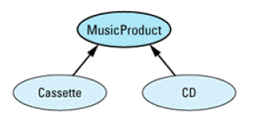

条款28：灵巧（smart）指针
时，某些灵巧指针被设计成负责删除它们指向的对象。这样做对防止资源泄漏很有帮助。
进行赋值操作，也就是进行 deep copy(深层拷贝)。对于其它的一些灵巧指针来说，仅仅拷贝指针本身或对指针进行赋值操作。还有一部分类型的灵巧指针根本就不允许这些操作。无论你认为应该如何去做，灵巧指针始终受你的控制。
//看下如何使用smart指针，假设在一个分布式系统中（对象一部分在本地，一部分在异地），访问本地简单，访问外地需要调用RPC，然而我们需要采用相同的处理方法。
template<class T> // 指向位于分布式 DB（数据库）
class DBPtr {
public:
DBPtr(T *realPtr = 0); // 建立灵巧指针，指向由一个本地 dumb pointer给出的 DB 对象
DBPtr(DataBaseID id); // 建立灵巧指针，指向一个DB对象，具有惟一的 DB识别符
};
class Tuple { // 数据库元组类
public:
...
void displayEditDialog(); // 显示一个图形对话框，允许用户编辑元组。
bool isValid() const; // 返回*this 是否通过了合法性验证
};
// 这个类模板用于在修改T 对象时进行日志登记。
template<class T>
class LogEntry {
public:
LogEntry(const T& objectToBeModified);
~LogEntry();
};
void editTuple(DBPtr<Tuple>& pt)
{
LogEntry<Tuple> entry(*pt); // 为这个编辑操作登记日志
do {
pt->displayEditDialog();
} while (pt->isValid() == false);
}
在 editTuple 中被编辑的元组物理上可以位于本地也可以位于远程，但是编写editTuple的程序员不用关心这些事情。灵巧指针类隐藏了系统的这些方面。就程序员所关心的方面而言，通过灵巧指针对象进行访问元组，除了如何声明它们不同外，其行为就像一
个内建指针。
（1）灵巧指针的构造、赋值和析构
template<class T>
class auto_ptr {
public:
auto_ptr(T *ptr = 0): pointee(ptr) {}
auto_ptr(auto_ptr<T>& rhs); // 拷贝构造函数
auto_ptr<T>& operator=(auto_ptr<T>& rhs); // 赋值操作符
~auto_ptr() { delete pointee; }
...
private:
T *pointee;
};
template<class T>
auto_ptr<T>::auto_ptr(auto_ptr<T>& rhs)
{
pointee = rhs.pointee; // 把*pointee的所有权传递到 *this
rhs.pointee = 0; // rhs不再拥有任何东西
}
template<class T>
auto_ptr<T>& auto_ptr<T>::operator=(auto_ptr<T>& rhs)
{
if (this == &rhs) // 如果这个对象自我赋值什么也不要做
return *this;
delete pointee; // 删除现在拥有的对象
pointee = rhs.pointee; // 把*pointee的所有权
rhs.pointee = 0; // 从 rhs 传递到 *this
return *this;
}
注意：auto_ptr不要使用值传递，否则会由于所有权转移，被析构。要用引用传递。
（2）实现Dereference 操作符
让我们把注意力转向灵巧指针的核心部分，operator*和 operator-> 函数。
template<class T>
T& SmartPtr<T>::operator*() const
{
perform "smart pointer" processing;
return *pointee;
}
注意返回类型是一个引用，返回对象会出现灾难性后果。pointee不仅可以指向T类型对象，也可以指向T的派生对象（返回的也要是派生类对象，否则会发生切割）。
灵巧指针不支持虚函数。
template<class T>
T* SmartPtr<T>::operator->() const
{
perform "smart pointer" processing;
return pointee;
}
（3）测试灵巧指针是否为 NULL
SmartPtr<TreeNode> ptn;
...
if (ptn == 0) ... // error!
if (ptn) ... // error!
if (!ptn) ... // error!
加入成员函数
operator void*();// 如果灵巧指针为 null，返回0， 否则返回非0。
此时上述代码均通过 ，但是会出现问题，不同类型的只能指针，居然也能相等
SmartPtr<Apple> pa;
SmartPtr<Orange> po;
...
if (pa == po) ... // 这能够被成功编译!
都被隐式转换为了void*指针。
解决方法为重载operator！（）
bool operator!() const; // 当且仅当灵巧指针是空值，返回 true。
用户程序如下所示：
SmartPtr<TreeNode> ptn;
...
if (!ptn) { // 正确
... // ptn 是空值
}
else {
... // ptn不是空值
if (ptn == 0) ... // 仍然错误
if (ptn) ... // 也是错误的
if (!pa == !po) ... // 能够编译
iostream库的实现除了提供void*隐式的类型转换，也有 operator!函数
（4）把灵巧指针转变成dumb指针
添加一个隐式类型转换操作符的函数
operator T*() { return pointee; }
void normalize(Tuple *pt);
DBPtr<Tuple> pt;
normalize(pt); // 能够运行
并且这个函数也消除了测试空值的问题：
if (pt == 0) ... // 正确, 把pt转变成
// Tuple*
if (pt) ... // 同上
if (!pt) ... // 同上
（5）灵巧指针和继承类到基类的类型转换
假设这样一种情况

class SmartPtr<Cassette> {
public:
operator SmartPtr<MusicProduct>()
{ return SmartPtr<MusicProduct>(pointee); }
...
private:
Cassette *pointee;
};
class SmartPtr<CD> {
public:
operator SmartPtr<MusicProduct>()
{ return SmartPtr<MusicProduct>(pointee); }
...
private:
CD *pointee;
};